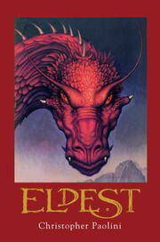
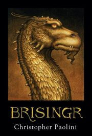
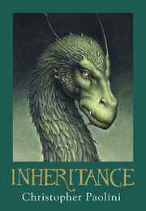

The Stories
See below for interesting information for each book!
Eragon

Eragon takes place in a land called Alagaësia, over which rules the evil, twisted king, Galbatorix. Galbatorix was once one of the legendary Dragon Riders - the long-gone peacekeepers of Alagaësia. After his first dragon was killed by Urgals, Galbatorix fell into madness, stole a new dragon, twisting the dragon's mind with dark magic, and betrayed and destroyed the Riders and their dragons with the help of thirteen other Riders called the Forsworn. He named his new dragon Shruikan.
Eldest
Eldest begins with Urgals attacking the Varden. This leads to the death of Ajihad, and the disappearance of Murtagh and the Twins. Subsequently, Eragon Shadeslayer, who witnessed Ajihad's death, is summoned to the Council of Elders to help them choose a new leader. They want to choose Nasuada, and use her as a puppet for their wishes. Eragon accepts their choice and agrees to pledge his fealty. However, Eragon stuns the Council by pledging his fealty to Nasuada, not them, and Nasuada is not as easy to control as the Council thought previously.
Brisingr
Brisingr starts four days after the Battle of The Burning Plains, as Roran, Eragon and Saphira watch as a group of worshipers of Helgrind with missing body parts perform ceremonies on slaves. Eragon desires to free the slaves but realizes the foolishness of the idea. Later Roran asks Eragon if he could teach him to use magic, and Eragon gives him a pebble and teaches him the words "Stenr Risa!", meaning "Stone, rise!", and warns him to be careful should he succeed. Eragon teaches Roran to shield his mind and is amazed by just how strong his love for Katrina is. Eragon then proceeds to heal Roran's shoulder, though it drains his strength more, especially just a few days after the Battle of the Burning Plains, because he figures Roran may be killed as a result of his handicap.
Inheritance
Inheritance starts out during the middle of the siege of Belatona. In the midst of the battle, Saphira is nearly killed by the Dauthdaert Niernen, a spear from Du Fyrn Skulblaka created to withstand and kill dragons. Eragon and Arya find Lord Bradburn and subdue him, taking control of the city. In the aftermath they are offered an alliance by the werecats, which they accept. That night, Elain's baby, Hope, is born with a cleft lip, which Eragon sings through the night to heal.